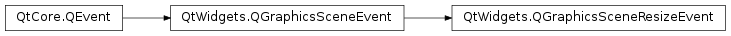

QGraphicsSceneResizeEvent¶
Synopsis¶
Functions¶
- def
newSize() - def
oldSize() - def
setNewSize(size) - def
setOldSize(size)
Detailed Description¶
The
PySide2.QtWidgets.QGraphicsSceneResizeEventclass provides events for widget resizing in the graphics view framework.A QGraphicsWidget sends itself a
PySide2.QtWidgets.QGraphicsSceneResizeEventimmediately when its geometry changes.It’s similar to
PySide2.QtGui.QResizeEvent, but its sizes,PySide2.QtWidgets.QGraphicsSceneResizeEvent.oldSize()andPySide2.QtWidgets.QGraphicsSceneResizeEvent.newSize(), usePySide2.QtCore.QSizeFinstead ofPySide2.QtCore.QSize.
-
class
PySide2.QtWidgets.QGraphicsSceneResizeEvent¶ Constructs a
PySide2.QtWidgets.QGraphicsSceneResizeEvent.
-
PySide2.QtWidgets.QGraphicsSceneResizeEvent.newSize()¶ Return type: PySide2.QtCore.QSizeFReturns the new size (i.e., the current size).
-
PySide2.QtWidgets.QGraphicsSceneResizeEvent.oldSize()¶ Return type: PySide2.QtCore.QSizeFReturns the old size (i.e., the size immediately before the widget was resized).
-
PySide2.QtWidgets.QGraphicsSceneResizeEvent.setNewSize(size)¶ Parameters: size – PySide2.QtCore.QSizeF
-
PySide2.QtWidgets.QGraphicsSceneResizeEvent.setOldSize(size)¶ Parameters: size – PySide2.QtCore.QSizeF
© 2018 The Qt Company Ltd. Documentation contributions included herein are the copyrights of their respective owners. The documentation provided herein is licensed under the terms of the GNU Free Documentation License version 1.3 as published by the Free Software Foundation. Qt and respective logos are trademarks of The Qt Company Ltd. in Finland and/or other countries worldwide. All other trademarks are property of their respective owners.